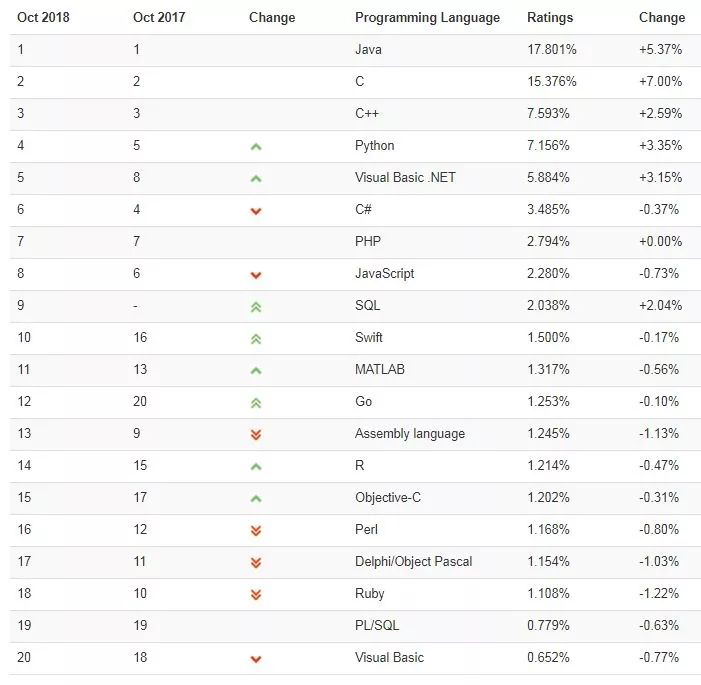

https://mp.weixin.qq.com/s?__biz=MzUzMTA2NTU2Ng==&mid=2247485440&idx=1&sn=829873fffe19cdc9add97035cdc9bbd9&chksm=fa4977b1cd3efea79f9aaf1e2980dc1b0150ef4f95e0d02a1e5eae106f9835927d897c3fbbec&scene=0#rd提供的爬取软件来源于：52pojie.cn@夜泉 免费使用
Java 依然免费，JDK11 请放心使用
点击上方“芋道源码”，选择“置顶公众号”
技术文章第一时间送达！
源码精品专栏
简单来说，可以看看笨神的朋友圈：
转发也是一种力量
给还在误信 Java 收费的基佬们！
Java 依然非常稳健，并且在 TIOBE 10 月的语言排行版，处于第一，毫无悬念。

而对于我们这些 Java 工程师来说，真正的挑战是，我们能够跟上 Java 快速更新迭代的步伐，每周愿意花费多少的时间在 Java 的学习上面。
所以，让我们一起对 Java 保持，「Stay hungry. Stay foolish」，永不满足，持续学习。
如下，是艿艿上一次收集了大家 JDK 版本使用的情况：
生产环境使用的 JDK 版本，76% 使用 JDK 8 。
本地开发使用的 JDK 版本，82% 使用 JDK8 。
点赞支持↓↓↓↓↓
Java 依然免费↓↓